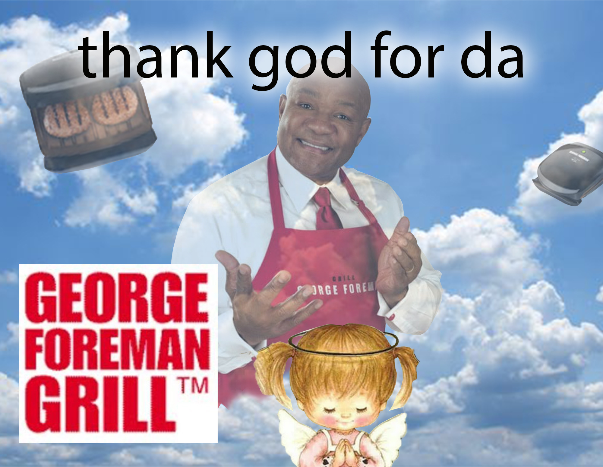
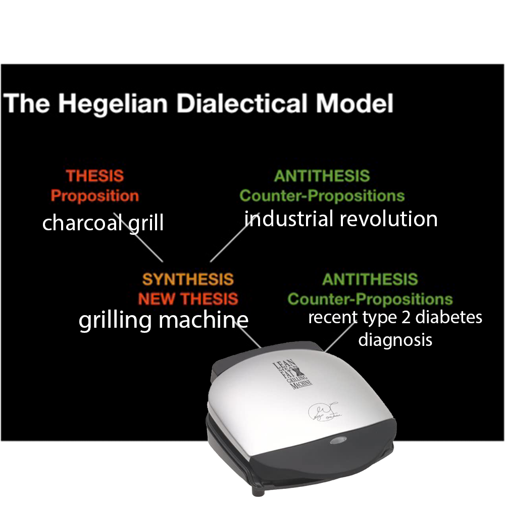
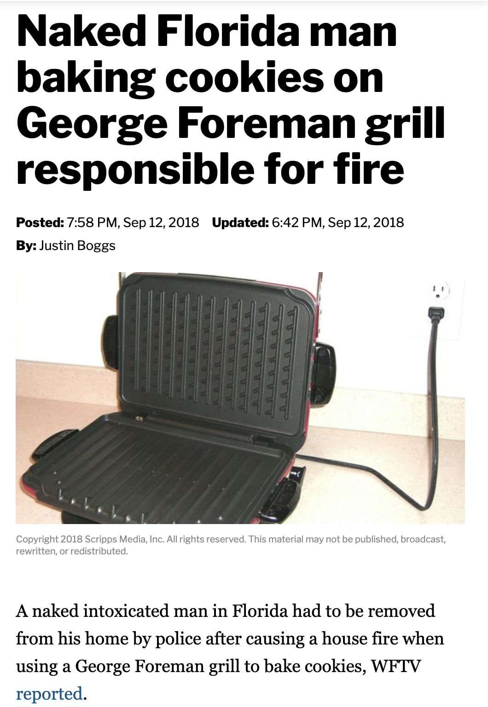

George Foreman® Foreman Grill Wiki
There were many great inventions of the 20th century, but maybe none as great or
notable as the George Foreman® Foreman Grill. After the device is heated to the proper
temperature, (noted by the light on the front), burgers cook in less than 5 minutes.
The nonstick nature of both sides of the grill plates make clean-up a breeze, letting you
get back to whatever you like doing much faster.

history

This is how the George Foreman Foreman Grill was invented.
lore

legend says that he drank 2 liters of vodka and then smoked a bowl, making him
very very hungry for cookies. sources say if you leave a handle and an ounce out for
him, he will return.
recipes
Cookies
imgredients
- George Foreman Registered Trademark Foreman Grill
- Cookie Dough
- 2 liters of vodka
- some marijuana
- 💯
burger
materials
- meat
- bread
- mayonaise